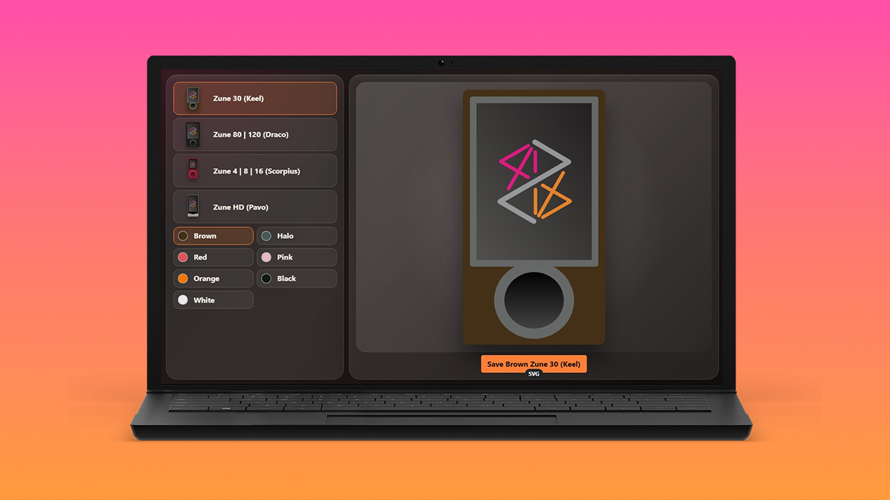

Zunepedia Creator

Zunepedia was an opportunity to create something, with limited design skills, with this year updating it with a refresh but also a chance to mark the occasion with Zunepedia Creator, which would be a new project inspired by the first application I created related to Zune, the original ZuneCardr built on Silverlight, a web-based technology, to generate an image of a Zune Card from Zune Social showing tracks listened to and what model and colour of Zune owned, where those original assets helped inspire the front cover art used on the original and newly updated Zunepedia. In 2018 these assets became part of a tutorial for Universal Windows Platform and this year after the success of porting Windows components to Blazor with Comentsys.Toolkit.Blazor along with creating the showcase website of comentsys.github.io/Comentsys.Toolkit.Blazor I used the power of the GitHub Copilot app to port this example to Blazor and build of Zunepedia Creator.
Zunepedia Creator revived and revisited the assets created in the past to bring this back to the browser to generate downloadable Zune artwork to mark the fifth anniversary of Zunepedia, this would be a Blazor WebAssembly project that would represent each Zune model using SVG supporting the colours originally available for each model and then be published into the existing website on GitHub Pages. Each of the four device families are represented and generated with SVG markup to provide the preview and output where the original designs were refined from their original designs to more closely represent the final models although still produce a more simplified look such as excluding secondary buttons along with creating the look-and-feel of the application itself to help celebrate the twentieth anniversary of the launch of the original Zune in 2006. GitHub Copilot app made what would have taken weeks of work and compressed this to just a few hours to produce.
Zunepedia Creator allows visitors to the website to create their own downloadable images of the original Zune 30GB, codenamed Keel in various colours such as brown, black or white along with others such as used on the Halo 3 limited edition Zune 30GB. Zune 80GB and the similar Zune 120GB codenamed Draco can be created in the colours available such as black which was the one I owned along with the smaller ultra-portable Zune 6, 8 or 16GB model codenamed Scorpius in colours such as red, green blue and more. Finally, it is possible to create an image of the Zune HD, in various colours from platinum to red which was the colour of device I owned. You can try out Zunepedia Creator now at zunepedia.com/creator.